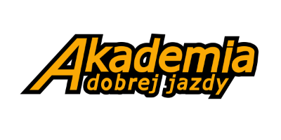

Prawo jazdy kat. B we Wrocławiu: od PKK do egzaminu w DORD
Bez błądzenia po forach. Cały proces krok po kroku: od profilu PKK, przez kurs i jazdy, po egzamin w DORD. Plus konkretny typ na dobrą szkołę w mieście.
Od czego zacząć kurs
Trzy formalności do ogarnięcia w kilka dni. Dopiero z nimi szkoła zapisze Cię na kurs.
Profil PKK
Złóż wniosek o Profil Kandydata na Kierowcę w wydziale komunikacji (we Wrocławiu online lub osobiście). To Twój numer startowy.
Badanie lekarskie
Orzeczenie od uprawnionego lekarza potwierdza brak przeciwwskazań do jazdy. Zwykle bez kolejki, od ręki.
Wybór szkoły
Patrz na zdawalność, instruktorów i to, czy plac oraz jazdy są w rejonie, w którym potem zdasz egzamin.
Cała droga do prawka kat. B
Od formalności do odbioru dokumentu. Sercem procesu jest kurs, bo to on decyduje, jak pewnie czujesz się za kierownicą.
Profil PKK i badania
Zakładasz profil kandydata i robisz badanie lekarskie. To przepustka do zapisu na kurs.
Kurs: teoria i praktyka
Zajęcia teoretyczne plus jazdy z instruktorem. Tu spędzisz najwięcej czasu i to ten etap robi z Ciebie kierowcę.
Egzamin wewnętrzny
Szkoła sprawdza Twoją gotowość przed egzaminem państwowym, w warunkach zbliżonych do tych w ośrodku.
Egzamin państwowy w DORD
Część teoretyczna i praktyczna w Dolnośląskim Ośrodku Ruchu Drogowego przy Łagiewnickiej 12 we Wrocławiu.
Odbiór prawa jazdy
Po zdanym egzaminie urząd wydaje dokument. Od tej chwili jeździsz samodzielnie.
Jak wygląda egzamin na kat. B we Wrocławiu
Egzamin ma dwie części: teorię i praktykę. Praktyka zaczyna się na placu manewrowym, a kończy w ruchu miejskim. Poniżej to, co realnie sprawdza egzaminator.
Część teoretyczna
Test jednokrotnego wyboru na komputerze: pytania z wiedzy podstawowej i specjalistycznej dla kat. B. Zdajesz go przed częścią praktyczną.
Plac manewrowy
Egzaminator sprawdza przygotowanie auta do jazdy, ruszanie oraz jazdę po łuku. To krótka, ale ważna rozgrzewka przed wyjazdem w miasto.
Jazda w mieście
Najdłuższa część: jazda po wyznaczonych trasach we Wrocławiu. Liczy się płynność, obserwacja, pierwszeństwo i reakcja na realny ruch.
Manual czy automat?
Wybór skrzyni decyduje o tym, jakimi autami będziesz mógł jeździć po egzaminie. Krótko o różnicy.
Skrzynia manualna
Uprawnia do wszystkich aut kat. B, manualnych i automatycznych. Do opanowania jest sprzęgło i zmiana biegów, ale zyskujesz pełną swobodę przy wyborze samochodu, także w wypożyczalni czy służbowego.
Skrzynia automatyczna
Prostsza nauka i często spokojniejszy egzamin, bo odpada obsługa sprzęgła. Prawo jazdy obejmuje wtedy wyłącznie auta automatyczne. Dobry wybór, jeśli planujesz jeździć tylko takim samochodem.
Wrocław dzielnica po dzielnicy
Egzaminu nie zdaje się w próżni. Liczy się to, czy jeździsz po trasach i skrzyżowaniach zbliżonych do egzaminacyjnych. Dlatego warto szkolić się w rejonie, w którym później podejdziesz do egzaminu.
Jak wybrać szkołę jazdy we Wrocławiu
Cena to nie wszystko. O tym, czy zdasz za pierwszym razem i będziesz pewnie jeździć, decyduje kilka innych rzeczy.
Zdawalność i opinie
Sprawdź, jak wypada szkoła na tle miasta i co piszą kursanci. Realne opinie mówią więcej niż hasła reklamowe.
Instruktorzy i auta
Stały instruktor, spokojne podejście i auto podobne do egzaminacyjnego robią ogromną różnicę w komforcie nauki.
Lokalizacja jazd
Najlepiej, gdy jeździsz po trasach zbliżonych do egzaminacyjnych i w rejonie, w którym potem podejdziesz do egzaminu w DORD.

Dobrym wyborem we Wrocławiu jest Akademia Dobrej Jazdy
Szukasz konkretu zamiast przeklikiwania dziesiątek ofert? Akademia Dobrej Jazdy prowadzi kursy kat. B we Wrocławiu, w manualu i na automacie. Szczegóły, ceny i terminy znajdziesz bezpośrednio u nich.
- Kurs kat. B: teoria i praktyka
- Wariant manualny i automat
- Jazdy po Wrocławiu
Prawo jazdy kat. B Wrocław: FAQ
Gotowy, żeby usiąść za kierownicą?
Masz cały plan na prawo jazdy kat. B we Wrocławiu. Następny ruch to wybór kursu i zapis.